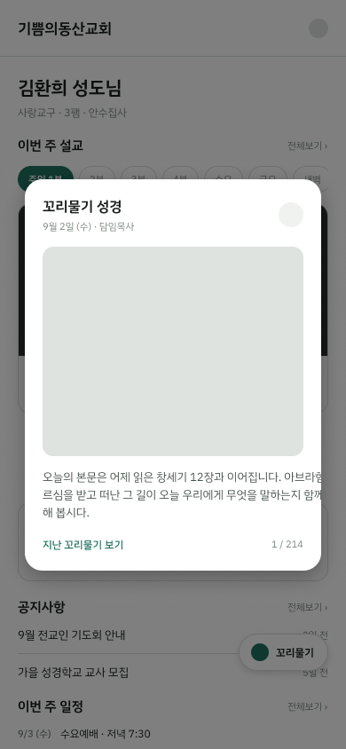
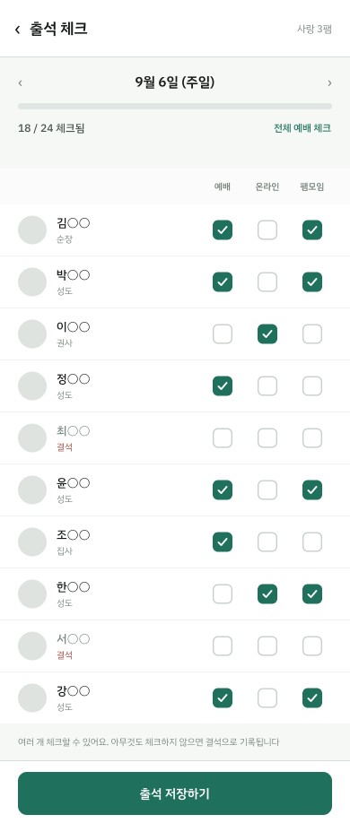
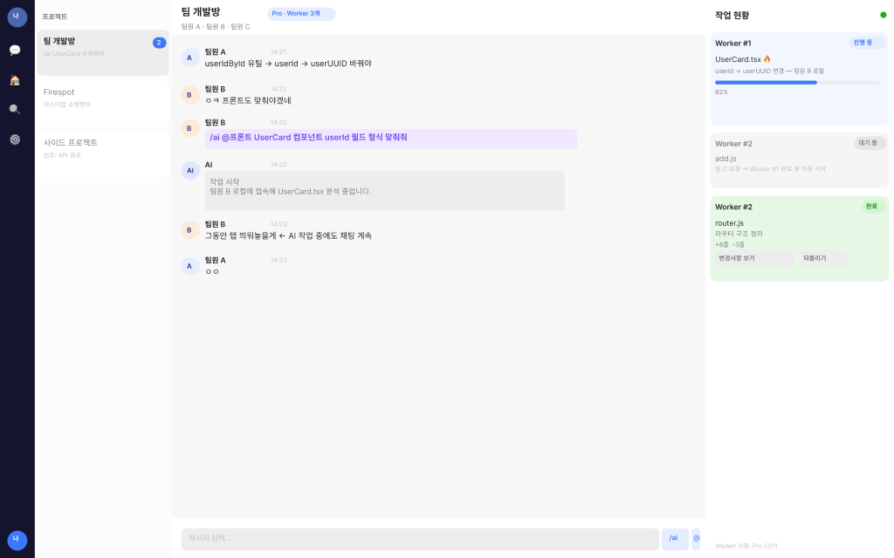

I define the problem, solve it with AI, and run it myself.
교회 청년부 앱 JOYHILL을 직접 기획·개발해 등록 217명 규모로 운영하고 있고, 전교인(약 1,000명) 확장을 기획하고 있습니다. 생성형 AI를 서비스 구조 안에 설계해 넣은 경험(CAPD, SyncAI)과, 문제 정의와 수익 모델을 맡아 해커톤 대상을 받은 경험(Readle)이 있습니다.
I built and run JOYHILL, a church youth-group app with 217 registered accounts, and I am now planning its expansion to the whole congregation (~1,000 people). I have designed generative AI into real service architectures (CAPD, SyncAI) and won a campus hackathon grand prize as PO, owning problem definition and the business model (Readle).
Find the problem. Design the structure. Run it myself.
아래 세 단계는 구호가 아니라 제가 실제로 한 순서입니다. 각 단계마다 근거가 되는 프로젝트를 붙였습니다.
These three steps are the order in which I actually worked. Each one points to the project that backs it.
01 · DEFINE
현장에서 문제를 찾습니다
Find the problem in the field
앱시트·구글시트 스크립트로 출석을 취합하던 청년부, 카카오톡으로 QT 인증을 확인하던 모임, 팀플에서 AI 구현이 서로 어긋나던 경험. 반복되는 비효율을 해결할 문제로 정의합니다.
Attendance collected through AppSheet scripts, QT check-ins confirmed by hand in chat, AI-generated code drifting apart in team projects. I turn repeated friction into a defined problem.
JOYHILLQTPotSyncAI
02 · DESIGN & BUILD
구조로 바꾸고 직접 만듭니다
Turn it into a working structure
5단계 권한 체계, Supervisor–Worker 에이전트, 2-LLM + RAG 파이프라인처럼 문제에 맞는 구조를 설계하고 개발·배포까지 맡았습니다.
A five-level permission model, a Supervisor–Worker agent, a 2-LLM + RAG pipeline: I design the structure the problem needs, then build and deploy it.
JOYHILLSyncAICAPD
03 · OPERATE
운영하며 고쳐 갑니다
Operate it and keep fixing
만든 뒤에도 실제 사용자 앞에서 운영합니다. 키 유출로 DB를 잃은 사고를 겪고 백업을 이중화했고, 확장 요구는 교회 회의를 직접 진행해 정리했습니다.
I keep running what I ship. After a leaked key cost us the database, I rebuilt it with redundant backups, and I ran the congregation meetings that shaped the expansion.
JOYHILLQTPot
NUMBERS
운영한 규모와 만든 양을 숫자로.
Scale I run, and volume I built.
운영 서버의 관리자 화면, GitHub, 로컬 저장소에서 직접 확인한 값만 썼습니다. 확인하지 못한 값은 넣지 않았습니다.
Every figure was checked in an admin screen, on GitHub, or in a local repository. Anything I could not verify is left out.
01 · 운영 현장IN OPERATION
0
JOYHILL
청년부 등록 계정
registered accounts
0%
JOYHILL
2026년 평균 예배 출석률 · 앱으로 주차별 기록
2026 avg. service attendance, recorded weekly in-app
0
QTPot
누적 QT 인증 · 가입 46명 중 32명 참여
QT check-ins · 32 of 46 members took part
02 · 만든 양BUILT
0
JOYHILL
머지한 PR (FE 27 + BE 25) · 5개월
merged PRs (FE 27 + BE 25) · 5 months
0
SyncAI
커밋 · 기획부터 배포까지 단독
commits · solo, planning to deploy
0/19
JOYHILL 확장Expansion
교회 회의 쟁점 반영 · 테스트 267개
meeting issues addressed · 267 tests
출석률은 앱 사용률이 아니라 청년부 출석 기록 값입니다. 확장 16건 중 5건은 현행 앱이 이미 같은 방식이라 되돌림 방지 테스트만 추가했습니다.
Attendance is a recorded attendance rate, not an app-usage rate. Of the 16 items, 5 already matched the live app, so I only added regression tests for them.
FEATURED PROJECTS
대표 프로젝트
Featured projects
카드를 누르면 문제 정의, 구조, 화면, 한계까지 자세히 볼 수 있습니다.
Open a card for the problem, structure, screens, and limits.
LIVE · EXPANDING
JOYHILL
2026.03 — 운영 중 · 확장 기획 2026.09 —live · expansion planning since 2026.09
출석 동기화와 계정 오류가 반복되던 청년부 운영을 자체 서비스로 바꾸고, 전교인 확장까지 이어지는 앱.
Replaced a fragile spreadsheet workflow for a church youth group with its own service, now being extended to the whole congregation.
217등록 계정accounts
52머지 PRmerged PRs
16/19확장 쟁점 반영issues addressed
자세히 보기 →Read more →
DEPLOYED · SOLO
SyncAI
2026.05 — 2026.10
같은 AI를 써도 팀원마다 다르게 구현해 충돌이 나는 문제를, 계획(Supervisor)과 실행(Worker)을 나눈 멀티에이전트로 푼 협업 툴.
A collaboration tool that fixes the "everyone prompts differently, everything conflicts" problem by splitting planning (Supervisor) from execution (Workers).
AppSheet와 구글 스프레드시트 스크립트 구조에서 출석 동기화와 계정 관리 오류가 반복됐습니다.
해결
자체 DB 기반 서비스로 바꾸고, 흩어져 있던 출석·공지·기도제목·새가족·설교노트를 한 앱에 통합했습니다. 5단계 역할 기반 권한 체계와 도메인 전체를 1인 기획·설계·구현했습니다. 같은 앱이 로그인한 사람의 권한에 따라 메뉴와 탭이 달라집니다.
숫자 · 등록 계정 217명, 2026년 평균 예배 출석률 54%(앱으로 주차별 기록), FE·BE 합쳐 커밋 331개·머지 PR 52개, 구글시트 자동 백업(매일 새벽).
아래 화면은 개발 환경(샘플 계정·가상 데이터)에서 캡처했습니다.
로그인 — 전화번호 + 생년월일 6자리최초 로그인 시 비밀번호 변경 강제팸 리더의 출석 체크리더의 MY관리자의 MY관리자 홈
전교인 확장 기획 (2026.09 ~)
장년층 분들의 요청으로 전교인(약 1,000명) 확장을 진행하고 있습니다. 권한·조직 구조 쟁점 19개를 정리해 교회 회의를 직접 기획·진행했고, 16건을 반영했습니다. 그중 5건은 기존 결정을 뒤집었습니다. 기존 2축(목양/사역)으로는 표현되지 않는 사례를 발견해 돌봄(care) 축을 추가하는 방향으로 데이터 모델을 다시 설계했습니다. 테스트는 267개입니다. 아직 서버에 배포하지 않은 개발 단계입니다.

확장 앱 모바일 와이어프레임 — 홈 (Figma)

출석 체크 화면 (이름은 가명 처리)
모바일 14화면·데스크톱 13화면의 와이어프레임을 Figma로 정리했습니다. AI의 도움을 받아 화면 구성과 흐름을 제가 직접 초안부터 설계했습니다.
장애 대응
2026-07-15, 공개 저장소에 EC2 접속 키가 유출되는 보안 사고가 있었습니다. 복구 과정에서 백업 없이 인스턴스가 삭제되어 DB 전체가 유실됐습니다. 같은 날 인스턴스 재구축과 데이터 복구, 비밀키 관리 정비를 마쳤습니다. 이후 백업을 이중화(EC2 + 별도 비공개 S3 버킷)하고, 낮 12시에 돌던 자동 백업 스케줄을 새벽으로 고쳤습니다.
AI를 쓰는 방식
개발 이슈와 주의 영역을 문서로 유지하고, 회의가 필요한 쟁점은 AI로 정리해 회의를 진행했습니다. 충분히 논의한 내용은 프롬프트로 만들어 새 세션에서 한 번에 작업했습니다. 결정 문서는 AI가 정리한 것이며, 회의 기획과 진행, 결정은 제가 했습니다.
JOYHILL — Church youth-group community app
Solo · 2026.03 – live · expansion planning since 2026.09
Problem
Attendance sync and account management kept breaking in the AppSheet + Google Sheets script setup.
Solution
I moved it to its own DB-backed service and merged attendance, notices, prayer requests, newcomers and sermon notes into one app. I planned, designed and built the five-level role-based permission model and the entire domain alone. Menus and tabs change with the logged-in user's role.
Numbers · 217 registered accounts, 54% average 2026 service attendance (recorded weekly in-app), 331 commits and 52 merged PRs across FE and BE, automatic nightly Google Sheets backup.
Screens below were captured in a dev environment with sample accounts and fake data.
Login — phone + 6-digit birth dateForced password change on first loginAttendance check by a group leaderLeader's My pageAdmin's My pageAdmin home
Whole-congregation expansion (2026.09 –)
At the request of older members I am extending the app to the whole congregation (~1,000 people). I listed 19 permission and organization issues, planned and ran the church meeting myself, and have addressed 16. 5 of them reversed earlier decisions. I found cases the old two-axis model (pastoral / ministry) could not express and redesigned the data model with a care axis. There are 267 tests; it is still a development build and not deployed.
Expansion app, mobile wireframe: home (Figma)Attendance check (names anonymized)
I organized 14 mobile and 13 desktop wireframes in Figma. I designed the screens and flows myself, starting from the first draft, with help from AI.
Incident response
On 2026-07-15 an EC2 access key leaked through a public repository. During recovery the instance was deleted without a backup and the whole database was lost. The same day I rebuilt the instance, restored data and fixed secret handling. Afterwards I made backups redundant (EC2 plus a private S3 bucket) and moved the nightly job away from noon.
How I use AI
I keep issues and risk areas in documents, use AI to organize topics before meetings, and turn settled discussions into prompts for fresh sessions. The decision documents were organized by AI; planning and running the meetings and making the decisions was mine.
SyncAI — AI 팀 협업 툴
개인 프로젝트 · 2026.05 ~ 2026.10 · 기획부터 설계·개발·배포까지 단독 수행
문제 발견
학교 팀 프로젝트에서 같은 AI를 써도 팀원마다 다르게 구현해 코드 구조와 변수 컨벤션이 어긋났고, GitHub 병합·배포 때 충돌이 반복됐습니다.
해결 — 계획과 실행을 나눈 2단계 에이전트
팀원 요청·명세
→
Supervisor LLM 계획 통합
→
Worker LLM #1…N
→
로컬 PC 파일 수정 (MCP 역방향)
→
사용자 승인
→
Git 반영 · 결과 격리
로그인팀 채팅방에서 /ai로 요청 (데모 팀에서 캡처)

설계 단계의 Figma 와이어프레임 — 채팅방 메인(AI 작업 현황 패널 포함, AI의 도움을 받아 직접 설계)
구현
MCP로 서버와 로컬 PC를 역방향 연결해 채팅 명령만으로 로컬 파일 수정
Composio로 Notion 등 외부 앱 자동화
MCP 서버 자동 설치(Mac / Windows)
기획·BM
Supervisor 무료 · Worker 구독제
구독 플랜별 AI 할당량 시스템 설계
Fly.io 배포
직접 검증한 것
민감 작업은 실행 전 사용자 승인, 결과 파일은 격리
보안 회귀 테스트 7/7: 비멤버의 작업 취소 → 403, 비멤버 WebSocket → 4003, 소유자 아닌 팀원의 승인 시도 → 403, 같은 refresh token 재사용 → 401
프롬프트 인젝션 시나리오를 실제로 심어 방어 확인
한계 · 기술적으로 배포까지 마쳤지만 시장에 출시해 사용자를 확보하지는 않았습니다. 시장 검증의 증거가 아니라 제품 구조를 설계하고 만든 경험으로 봐 주세요.
SyncAI — AI team collaboration tool
Solo · 2026.05 – 2026.10 · planning, design, build and deploy
Problem
In school team projects, everyone used AI differently, so code structure and naming drifted and every GitHub merge or deploy ended in conflicts.
Solution — split planning from execution
Team requests
→
Supervisor LLM merges plans
→
Worker LLMs #1…N
→
Edit local files (reverse MCP)
→
User approval
→
Git · isolated results
LoginAsking the AI with /ai in team chat (demo team)
Design-stage Figma wireframe: main chat room with the AI task panel (designed by me with help from AI)
Build
Reverse MCP connection lets chat commands edit local files
Composio automation for Notion and others
Auto-installed MCP server (Mac / Windows)
Product & business model
Free Supervisor, subscription Workers
Per-plan AI quota system
Deployed on Fly.io
What I verified
Sensitive actions need user approval; result files are isolated
Planted real prompt-injection scenarios and confirmed the defense
Limit · It is deployed and working, but I did not launch it to the market or acquire users. Treat it as evidence of product and architecture work, not market validation.
Readle — 학생 문해력 향상 서비스
2026 SKTHON · GovTech 창업경진대회(교내 해커톤, 교육 분야) 대상 · 2026.09.10 ~ 12 · 6인 팀(PO 1·DE 1·FE 2·BE 3) 중 PO
제 역할 (PO) · 문제정의, 자료조사, 효과 근거자료, BM 구축, 발표. 실사용자 인터뷰는 하지 못했습니다(해커톤 기간 내).
문제정의 — 데이터로 뒷받침한 프레임
OECD PISA 2025: 한국 읽기 501점, 참여 이래 역대 최저(2022년 515점 대비 14점 하락), 하위·상위권 양극화
한국언론진흥재단(2025): 10대 숏폼 이용 49.1%, 학생 연간 독서량 감소
법적 근거: 「기초학력 보장법」(2022.3.25 시행), 제1차 기초학력 보장 종합계획(2023~2027)
솔루션과 효과 근거
매일 10문제(뉴스 지문, AI 즉시 피드백) · 약점 분석 5축 레이더 차트와 오답 복습 · 친구 실시간 배틀. 효과 근거는 Yang et al.(2021, Psychological Bulletin) 메타분석입니다(학생 48,478명, 퀴즈 학습 효과크기 g=0.499, 읽기·어휘 g=0.644). 즉시 피드백·반복·복습이 효과를 키운다는 결과를 설계에 반영했습니다.
BM — B2G 3단계
고등학생 파일럿(수능 국어 대비 도구)
초·중등 및 일반 학습자로 확장
파일럿 효과 데이터를 근거로 교육청·학교 단위 라이선스 도입
Readle — Reading-literacy service for students
Grand prize at the 2026 SKTHON · GovTech startup contest (campus hackathon, education track) · 2026.09.10–12 · PO in a six-person team (1 PO, 1 DE, 2 FE, 3 BE)
My role (PO) · problem definition, research, evidence, business model, presentation. I could not run user interviews within the hackathon window.
Problem — framed with data
OECD PISA 2025: Korea's reading score 501, the lowest since joining (down 14 from 515 in 2022), with widening polarization
Korea Press Foundation (2025): 49.1% of teens use short-form video; annual reading declining
Legal basis: Basic Academic Skills Guarantee Act (in force 2022), first national plan (2023–2027)
Solution and evidence
Ten daily questions from news passages with instant AI feedback, a five-axis weakness radar with wrong-answer review, and live friend battles. The evidence is Yang et al. (2021, Psychological Bulletin): 48,478 students, quiz-learning effect size g=0.499 (reading/vocabulary g=0.644). I built instant feedback, repetition and review into the design.
Business model — three-stage B2G
High-school pilot (positioned as CSAT Korean prep)
Expand to primary/middle school and general learners
Use pilot results to license to education offices and schools
역할 분담 · 팀원(박차원): 프런트엔드 전체 UI·DB 스키마·UI/UX 설계. 본인(김환희): 백엔드 REST API 전체, AI 파이프라인(2-LLM + RAG + SSE), GCP 인프라(Cloud Run·Cloud SQL·CI/CD), 테스트 자동화, 데이터 분석 모듈. 문제 자체는 기업/멘토가 제시했고, 환자·의사 인터뷰는 하지 않았습니다.
문제
복막투석 환자는 하루 3~5회 스스로 투석액을 교환하지만, 이상 징후가 나타나도 다음 방문 전까지 의사에게 전달되지 않습니다. 수기 기록은 누락·오기가 잦습니다.
해결 — 수치 계산과 임상 해석을 분리한 2-LLM 구조
투석 기록
→
Python 통계 분석
→
LLM 1 임상 쿼리
→
RAG 멀티쿼리
→
LLM 2 맞춤 질문
→
SSE 전달 · 의사 대시보드
실패에서 나온 설계 · 처음엔 LLM 하나에 계산과 해석을 모두 맡겼다가 수치 오류와 환각이 다수 발생했습니다. 그래서 Python이 계산을 전담하고 Gemini는 해석만 하도록 나누고, 의학 근거는 RAG로 주입했습니다.
RAG: KDIGO(361청크) + ISPD(589청크) + MedlinePlus(62청크, 주간 자동 갱신) = 1,012청크, pgvector
10주간 기능 구현 80건+, GCP 서비스 3개, 처음 폴링이던 방식을 SSE로 전환
환자 화면의사 대시보드(위험도 자동 분류)
AI 질문 검토·승인과 EMR SOAP 요약 자동 생성
시스템 아키텍처GCP 배포 · CI/CD
CAPD — Peritoneal dialysis record review & AI follow-up questions
Seokyeong SW Talent Program industry project · 2-person team · 2026.04–06 (10 weeks)
Roles · Teammate: entire frontend UI, DB schema, UI/UX. Me: whole backend REST API, AI pipeline (2-LLM + RAG + SSE), GCP infrastructure (Cloud Run, Cloud SQL, CI/CD), test automation, analytics module. The problem was provided by the company and mentor, and I did not interview patients or doctors.
Problem
Patients exchange dialysate 3–5 times a day, yet warning signs may not reach the doctor until the next visit, and handwritten records are error-prone.
Solution — split calculation from clinical interpretation
Dialysis log
→
Python statistics
→
LLM 1: clinical query
→
RAG multi-query
→
LLM 2: tailored questions
→
SSE · doctor dashboard
A design born from failure · I first gave one LLM both calculation and interpretation and got many numeric errors and hallucinations. So Python does the math, Gemini only interprets, and RAG supplies medical evidence.
80+ features in 10 weeks, 3 GCP services; replaced polling with SSE
Patient viewDoctor dashboard (auto risk levels)
Question review/approval and auto-generated EMR SOAP summary
ArchitectureGCP deployment · CI/CD
QTPot — QT 인증 관리 자동화
개인 프로젝트 · 2026.02 ~ 운영 중
카카오톡으로 수동 확인하던 QT 인증을 앱으로 자동화했습니다. 사진 자동 최적화, 관리자용 인증 현황 대시보드, FCM 푸시를 구현했습니다. 가입자 46명 중 32명이 한 번 이상 인증했고, 누적 인증은 956회입니다. 올해 10회 이상 인증한 회원은 19명, 30회 이상은 7명입니다.
회원 개인정보 보호를 위해 이름과 이메일은 가명으로 바꿔 표시했습니다.
로그인오늘의 큐티 인증월간 랭킹관리자 현황
근본 원인 추적 · "오래 로그인하면 피드가 안 뜬다"는 제보의 진짜 원인은 백엔드가 인증 실패를 전부 403으로 응답해, 프런트의 401 기반 자동 로그아웃이 한 번도 동작하지 않은 것이었습니다. 401과 403 처리를 분리해 해결했습니다.
한계: PWA 특성상 지속적인 푸시가 어렵고, 정식 만족도 조사는 하지 않았습니다.
QTPot — Automating QT check-in tracking
Solo · 2026.02 – live
I replaced manual QT check-ins in a chat group with an app: automatic photo optimization, an admin dashboard and FCM push. Of 46 sign-ups, 32 checked in at least once, with 956 check-ins in total. 19 members checked in 10+ times this year and 7 checked in 30+ times.
Names and emails are pseudonymized to protect members' privacy.
Root-cause tracing · The report "the feed stops loading after long logins" came from the backend returning 403 for every auth failure, so the frontend's 401-based auto-logout never fired. I separated 401 and 403 handling.
Limits: as a PWA it cannot keep push alive, and I did not run a formal satisfaction survey.
FireSpot — 트렌드 기반 핫플레이스 서비스
4인 팀 · 2026.03 ~ 04 (약 5주) · 네이버 데이터랩 기반 트렌드 분석
프런트엔드를 79커밋 전담했고 백엔드 인프라·CI/CD를 맡았습니다. 티어링 알고리즘은 팀원이 설계했습니다. Figma 와이어프레임을 실제 React 화면으로 구현했습니다.
지도장소 상세피드마이페이지 Premium
화면은 Figma 와이어프레임 기준입니다.
FireSpot — Trend-based hot-place service
Team of four · 2026.03–04 (~5 weeks) · trend analysis on Naver DataLab
I was the sole frontend developer (79 commits) and handled backend infrastructure and CI/CD. A teammate designed the tiering algorithm. I turned Figma wireframes into real React screens.